Mavis and Ken's Pub's 1956 - 1985
Ken found employment with Shipstone's Brewery on leaving the Navy in 1946. His father George and uncle Joe were already employed by Shipstone's, Ken began in the cooperage but he soon moved to the offices where he became a member of the Accounts Department. He remembered regular visits to the County Hotel in Nottingham with bundles of cheques for Mr Shipstone's signature. After a period of time in the offices Ken became a stock-taker for pubs in and around Nottingham, but he wanted his own pub. In 1956 Ken was appointed Assistant Manager of Truman's Vaults in Nottingham Market Square. This came with a good sized house in Mansfield Road for Mavis and Michael, but also involved periods of relief management in pubs such as The Wolds and the St Anns Well Inn. It also included a long period as temporary manager of the Athol Hotel in Sheffield whilst it was transferred from Shipstones to another brewery. In 1958 Ken applied for the management of The Shire Horse in Corby and left Shipstone's for Hole's of Newark. Holes was acquired by Courage in 1967 with whom Ken stayed as manager of the Wheatsheaf Inn and the Kings Arms, until his retirement in 1985.

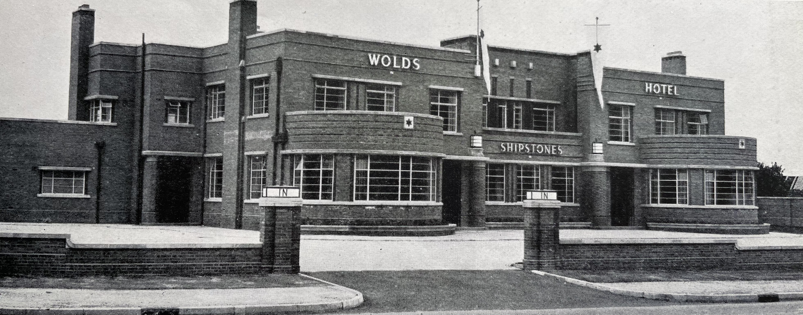
The Wolds
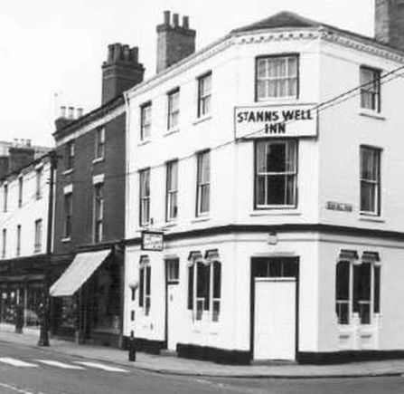
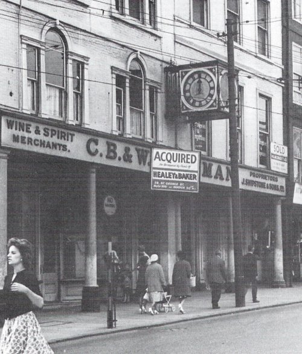
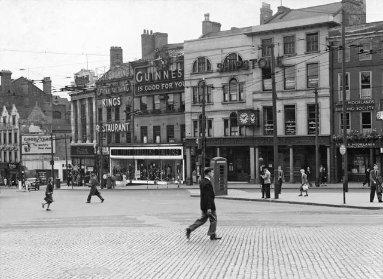
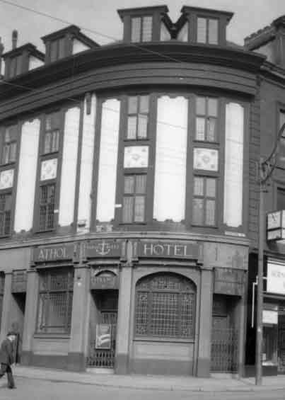
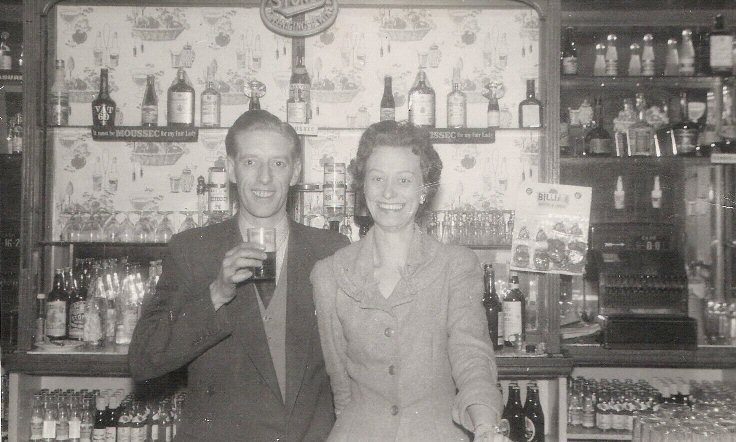
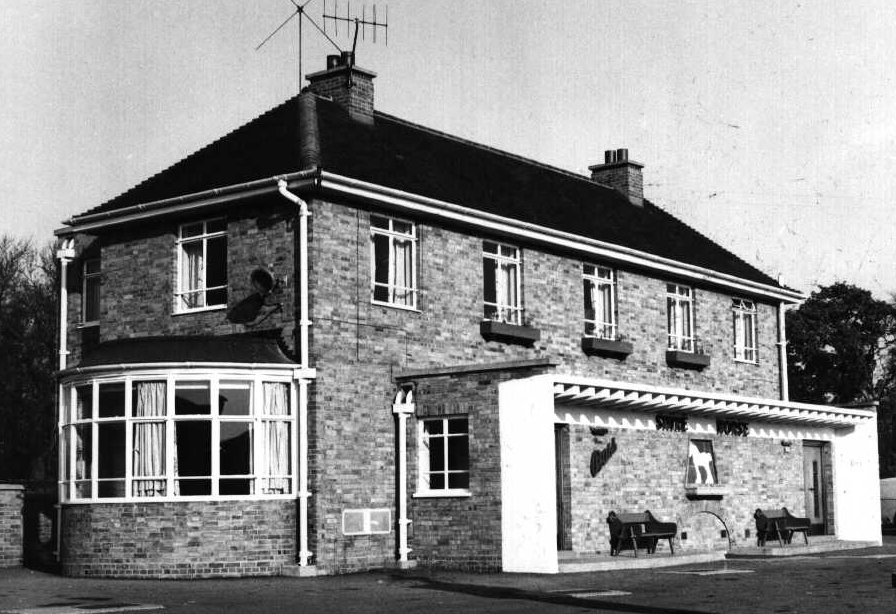
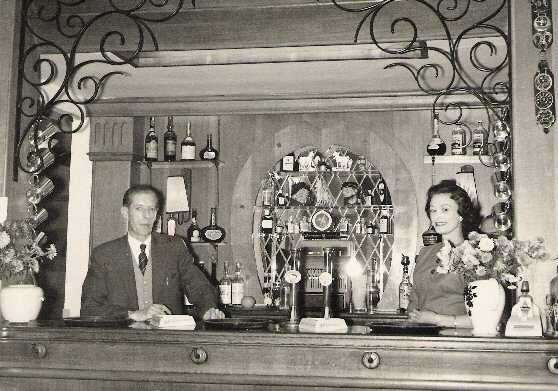
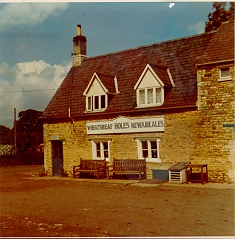
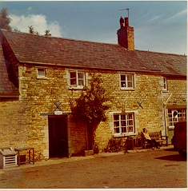
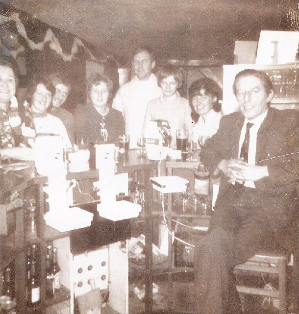
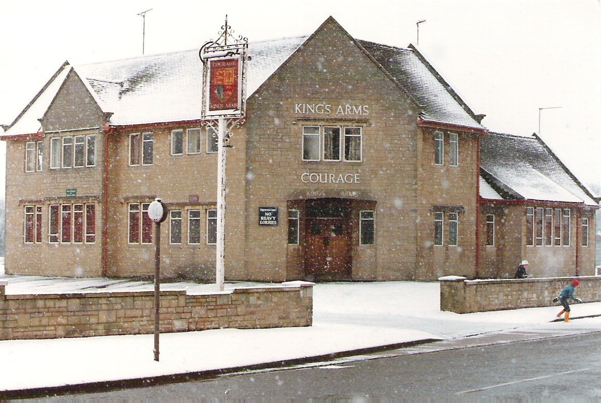
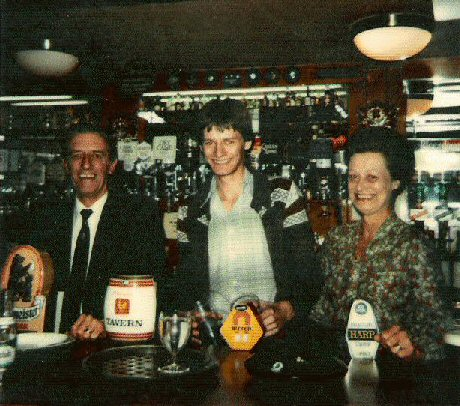